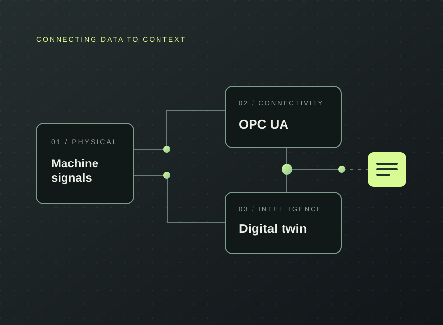

Industrial digital twin integration
Making machine and sensor data useful, accessible, and connected.

INDUSTRIAL CONNECTIVITY / SYSTEM VIEWThe challenge
Machine-internal signals and external sensor streams often arrive through different interfaces. This project asked how to bring those data sources into one coherent architecture without losing their industrial context.
The approach
Designed a modular acquisition and integration pipeline: OPC UA data retrieval, external sensor processing, backend services, MongoDB persistence, live monitoring, and semantic mapping to an Asset Administration Shell via Eclipse BaSyx.
- Connected machine signals via OPC UA and external sensor telemetry
- Mapped selected properties into AAS submodels
- Developed backend communication and monitoring services
- Containerised services for more reproducible operation
The outcome
Delivered a documented working integration foundation and evaluated nominal, stress and fault scenarios. The project intentionally did not implement predictive-maintenance machine-learning models.
Built an extensible foundation for future condition monitoring.
From the project
Public documentation intentionally excludes confidential industrial source code, credentials and infrastructure details.